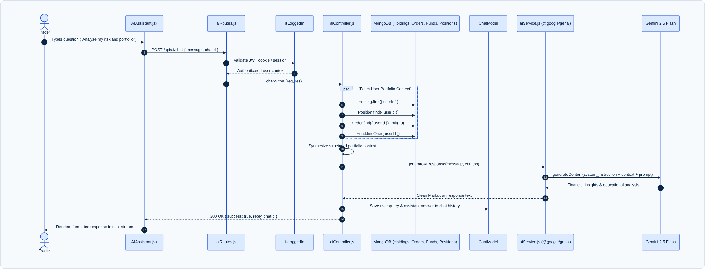

Zerodha Clone features an integrated conversational AI financial assistant built with Google Gemini (using the modern @google/genai SDK). Unlike generic chatbot implementations that offer isolated answers, this assistant operates with real-time portfolio context injection: it inspects the authenticated user's active holdings, intraday positions, recent order history, and available cash before answering, allowing it to provide personalized portfolio health assessments, risk evaluations, and trade explanations.

When a user submits a prompt via POST /api/ai/chat, the controller executes a high-speed parallel query to gather the trader's complete financial state:
const [holdings, positions, orders, funds, watchlist] = await Promise.all([
Holding.find({ userId }).lean(),
Position.find({ userId }).lean(),
Order.find({ userId }).sort({ createdAt: -1 }).limit(20).lean(),
Fund.findOne({ userId }).lean(),
WatchlistList.findOne({ userId, isDefault: true }).lean(),
]);
The controller synthesizes these documents into a concise, token-efficient structured context string:
--- USER PORTFOLIO CONTEXT --- Available Capital: ₹75,200 | Used Margin: ₹24,800 | Reserved: ₹0 Holdings: - RELIANCE: 10 shares @ avg ₹2,450 (Current LTP: ₹2,525, P&L: +₹750 / +3.06%) - TCS: 5 shares @ avg ₹3,280 (Current LTP: ₹3,350, P&L: +₹350 / +2.13%) Active Positions: None Recent Orders: - BUY 10 RELIANCE @ 2450 (status: completed) Tracked Watchlist: RELIANCE, TCS, INFY, HDFCBANK, ICICIBANK, SBIN, ITC ------------------------------
The service enforces strict regulatory and ethical boundaries defined in backend/services/aiService.js:
const SYSTEM_INSTRUCTION = ` You are an AI assistant inside a stock trading and portfolio management application. Your role is to help users understand: - Their portfolio, holdings, positions, orders, funds, profit and loss - Stock market concepts and trading terminology Rules: 1. Give clear and simple explanations. 2. Use the user's portfolio data when it is provided in the prompt. 3. Never invent portfolio data, prices, orders, funds, or transactions. 4. If required information is not provided, clearly say that the information is unavailable. 5. Never execute, place, modify, or cancel a trading order. 6. Never claim that an order has been executed unless the backend explicitly provides that information. 7. Do not ask for passwords, OTPs, API keys, or other sensitive credentials. 8. For financial topics, provide educational information and avoid presenting predictions as guaranteed outcomes. 9. Keep responses concise and useful. `;
All conversations are stored in MongoDB via ChatModel.js:
{ role: 'user' | 'assistant', content: String, timestamp: Date }.chatId, new messages are appended to that document, maintaining multi-turn context.chatId is supplied, a new chat document is created with a generated title (e.g., derived from the user's initial question).GET /api/ai/chats) or delete obsolete history (DELETE /api/ai/chats/:chatId).
If GEMINI_API_KEY is absent in development or if external rate limits occur, aiService.js captures the condition gracefully without returning 500 errors to the client, providing clear educational guidance on how to enable the generative AI key.